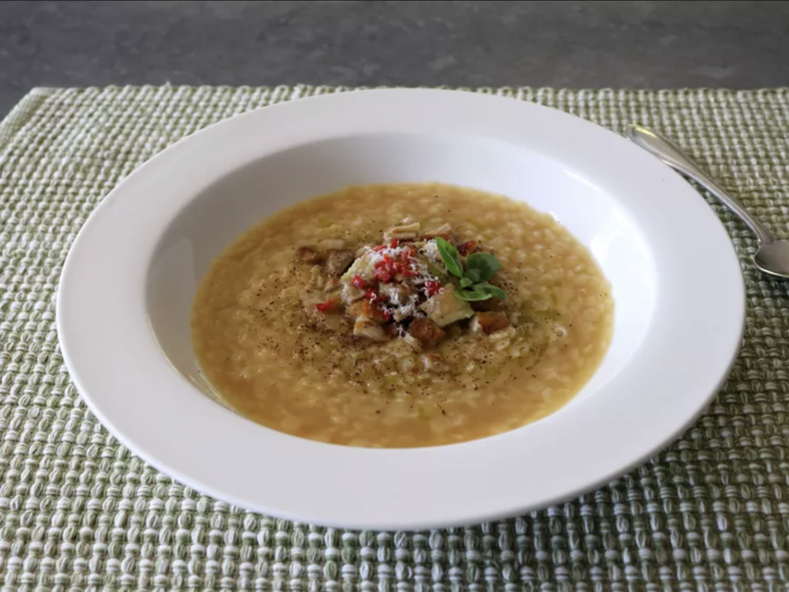

Home
Chicken Pastina

Chef John's chicken pastina is like a big, warm hug from an Italian grandma, a comfort food
that will, quite literally, change your mood. You can make this simple soup with a fortified
broth if you have the time, or simply use off-the-shelf chicken broth for the 15-minute
version.
Ingredients
- 4 cups prepared chicken broth
- salt to taste
- 1 cup star-shaped pastina, or acini di pepe
- freshly ground black pepper to taste
- 2 tablespoons unsalted butter
- 3/4 cup finely grated Parmigiano Reggiano cheese
- extra-virgin olive oil, for drizzling
Steps
- Bring broth to a simmer over medium-high heat. Taste; season with salt if needed.
-
Reduce heat to medium, and stir in pastina. Cook, stirring occasionally, for about 30
seconds less than the package directions, 5 to 8 minutes.
-
Turn off heat, and stir in black pepper, butter, and some of the grated cheese. Stir
constantly until butter disappears.
-
Ladle pastina into hot bowls. Top with more freshly ground black pepper and remaining
Parmigiano Reggiano; drizzle with olive oil and serve.